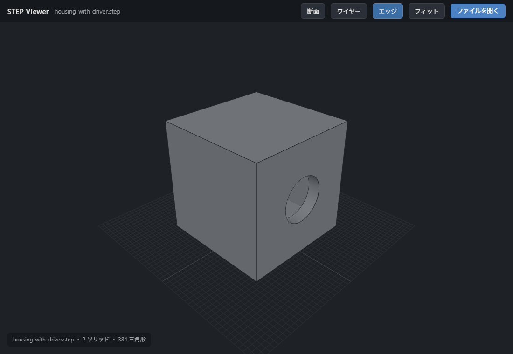
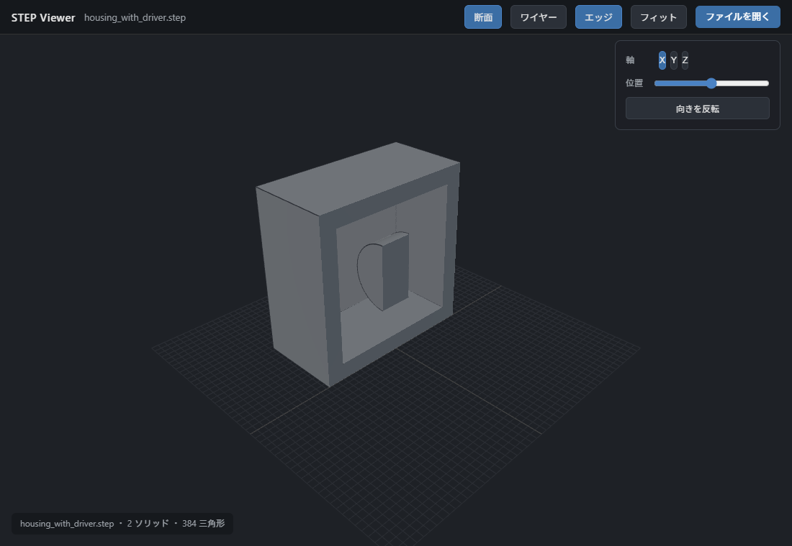

STEP Web ビューア 操作手順
ブラウザで STEP（3D CAD）データを開いて確認できる社内ツール
アクセス先
final-step-viewer.pages.dev
STEPファイル（.step / .stp）をドラッグ&ドロップするだけで、その場で3D表示・断面確認ができます。
インストール不要
、PC・Mac・スマートフォンのブラウザで動作します。ファイルはご自身のブラウザ内だけで処理され、
外部へは一切送信されません
。

▲ 通常表示（回転・拡大して全体を確認）

▲ 断面表示（内部構造を切断面で確認）
基本操作
ファイルを開く
上記URLにアクセスし、STEPファイルを画面に
ドラッグ&ドロップ
します（右上の「ファイルを開く」からでも可。スマートフォンは画面を
タップ
して選択）。
視点を動かす
回転
左ドラッグ
移動
右ドラッグ
拡大縮小
マウスホイール
（スマホ：1本指で回転／2本指で移動／ピンチで拡大縮小）
表示を切り替える
フィット
全体が収まる視点へ
エッジ
稜線の表示切替
ワイヤー
ワイヤーフレーム表示。
断面で内部を見る
断面
を押すと操作パネルが開きます。
軸（X / Y / Z）
を選び、
位置スライダー
で切る場所を調整、
向きを反転
で切る側を入れ替えます。切断面は中実に塗りつぶして表示されます。
補足・仕様
対応形式
STEP（.step / .stp）
対応ブラウザ
Chrome / Edge / Safari / Firefox
対応端末
Windows / Mac / iPad・スマホ
データの扱い
ブラウザ内処理・外部送信なし
ブックマーク
推奨（Windows: Ctrl+D／Mac: ⌘+D）
オフライン版
standalone.html を配布（ダブルクリックで起動）
STEP Web ビューア 操作手順 2026年6月
お問い合わせ：堀内